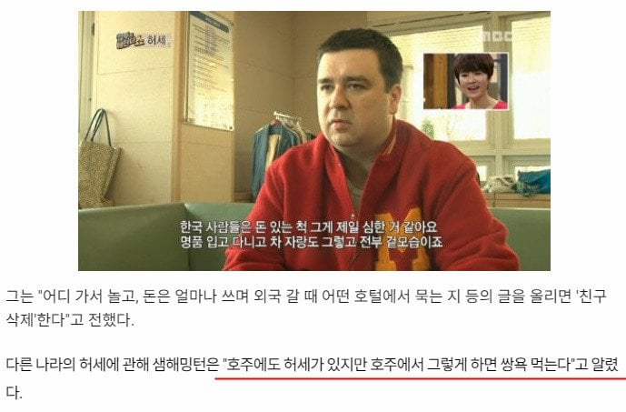
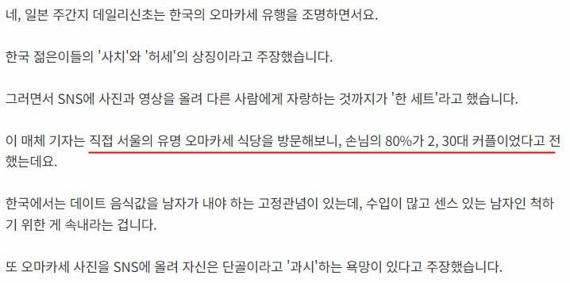
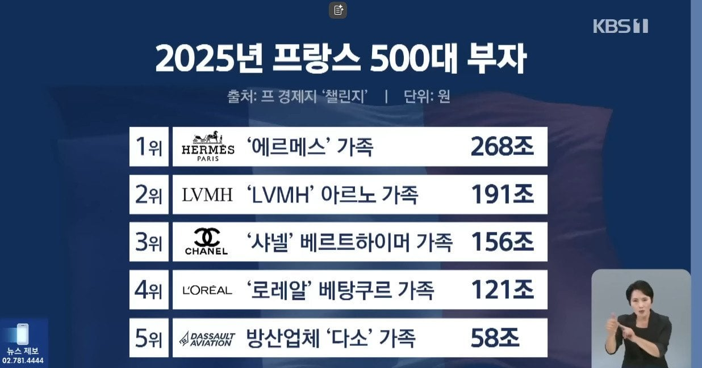

알빠노만 외치는 한국의 허세문화는 언제쯤 사그러질까



알빠노만 외치는 한국의 허세문화는 언제쯤 사그러질까
브랜드 로고 플레이 말고 그 디테일 보고 사면 비싸도 살만하지 않나? 옷 같은 경우엔 로고가 아예 안보이고 품질이나 디테일이 좋고, 구두같은거는 공법이나 가죽품질 같은거가 좋은거. 쭝국애가 만들어다 로고 붙인거 따위 사면 돈낭비지
신발은 확실히 네임드 있는 거 신어야 허리가 안 아프더라
지돈 지가 쓴다는데 지랄들은
나는 와이프랑 진짜 브랜드나 명품 하나도 모르고 살았는데
애기 어린이집 가면서 애기 옷이 브랜드가 존나 많고 그런거 알게 됨...
그래도 우리는 걍 상황에 맞게 이쁜거만 사서 입혔는데
다른집은 보니까 중고로라도 사서 고급 브랜드 옷을 입히더라고...ㄷㄷ
외모가 비슷비슷하니
겉치레라도 다르게 차별화 하고 싶은 본능이있는건가
먹고살만하니까 사는건데 뭐
오마카세 비싸서 자주는 못가고 기념일 챙길겸 1년에 한번쯤은 가는정돈데 이게 그렇게 잘못된건가
오마카세는 사치고 능이오리백숙은 보양식인가?
ㅋㅋ 그럼 저 패션재벌 기업들 명품 매출은 죄다 한국인이 올려줬음? 지랄들을 한다
지랄한다ㅋㅋ
근데 명품 같은건 급식 + 문신충들이 ㅈㄴ 많이 입던데
꼭 그렇지도 않음ㅋㅋ
집이 너무 비싸져서 못사니까 대신 차나 명품같은거에 눈 돌리는 것 같음
그냥 관념이 박살난거. 내가 한국인이 맞나 싶을정도로 내가 모르는 한국문화가 많다.
오마카세를 남자들이 가고싶어서 가겠냐 잭스하고싶어서 맞춰주는거겠지
그리고 나는 저 허세같은게 사람들이 더 빡세게 사는 원동력같은거라고 본다 저런거 할라면 조금이라도 더 빡세게 살아야되니까
나도 예전에 명품 왜사는지 모르겠다 하다가
이번에 카메라 Z8 사고나서 그런말안함